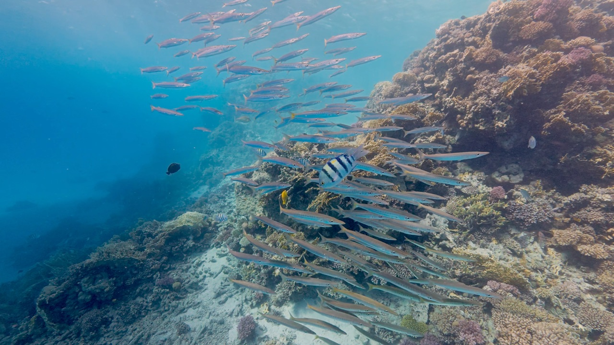
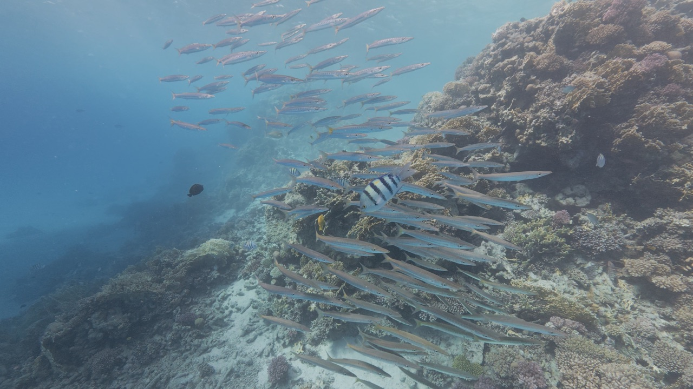

The underwater color correction app for divers
Restore the colors of your dive footage. Made for GoPro, DJI and underwater cameras.
- iPhone
- No account, nothing uploaded
- Free to try


BeforeAfterDrag the slider to compare original and corrected footage.
Underwater video color correction on your iPhone
Water absorbs red first, so footage turns blue-green. Reef Tone brings the colors back.
Blue or green water
Tell the app what the water looked like so the correction matches your dive.
Adjustable intensity
Fine-tune the correction and compare original and result before you save.
Presets
Save the water color and your current values as a preset and reuse them.
Photos and videos
Import from Photos or Files, then save the result to Photos or Files.
Private by design
Everything is processed on your device. No upload, no account.
Precise dehazingPro
Physically based underwater dehaze for hazy footage.
Batch processingPro
Process up to 10 videos at once.
Supported cameras
Reef Tone works with any video material you can import to your iPhone, whether it comes from a GoPro, a DJI or any other underwater camera. It has been tested with footage from DJI cameras.
Frequently asked questions
How do I fix blue underwater footage?
Import your video, choose blue or green water, adjust the intensity and check the result with the before/after comparison. Water absorbs red light first, which is why untreated footage looks blue-green; Reef Tone compensates for that.
Is there DJI Osmo Action 5 Pro color correction?
Yes. Reef Tone works with any video material you import from Photos or Files, so it is not tied to one camera. It has been tested with footage from DJI cameras.
Does Reef Tone upload my videos?
No. Photos and videos are processed on your device. There is no upload and no account.
Can I correct photos as well as videos?
Yes. You can import photos and videos, and the result is saved to your photo library or Files only when you choose to save it.
Is Reef Tone free?
The free version is limited in the number of videos you can export. Reef Tone Pro unlocks unlimited videos, precise dehazing and batch processing, as a subscription or a one-time purchase. Current prices are shown in the App Store.